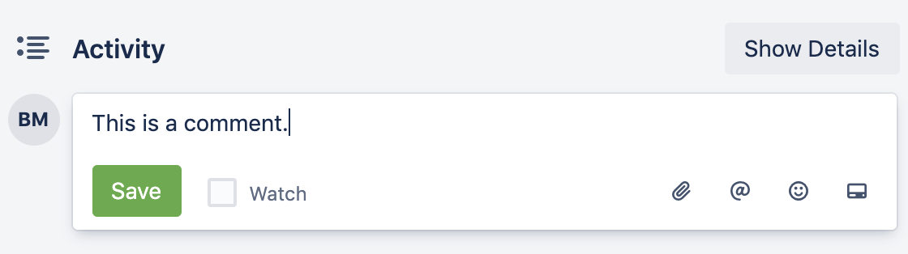

Commenting on a card
Leave comments on cards to communicate with other members of your board.
To comment on a card, perform the following actions:
- Click on the card for which you would like to leave a comment.
-
In the Activity area, in the Write a
comment... field, enter your comment.
- To receive notifications when the card is updated, check the Watch checkbox.
- To upload a file as part of your comment, click the Add an attachment icon.
- To tag another member of the board, click the Mention a member icon.
- To use emojis in your comment, click the Add emoji icon.
- To insert a link to another card or Trello board, click the Add card icon.
- Click Save. This will add the comment to the top of the activity list.